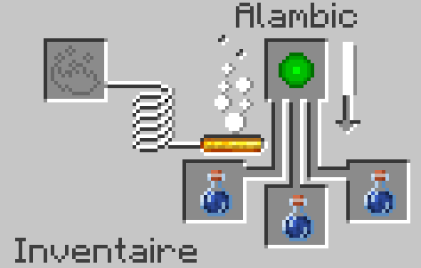
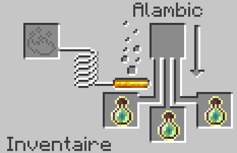

Fiche d'Identité
Nom : XP
Type : Objet
Rareté : Uncommun
Renouvelable : Oui
Stackable : Oui (64)
Premières apparitions : 1.0
Description
L'XP que rajoute SimpleCraft, n'est âs a confondre avec l'XP de Minecraft vanilla. Il ne peut être récupéré seulement via un craft spécifique a base d'Overworld Cristal (3 XP), de Nether Cristal (6 XP) ou d'Ender Cristal (9 XP).
Crafting
 |
||
 |
||
 |
||
Utilisation
L'XP peut servir a différentent choses. Il peut servir a la confection d'un bloc d'XP. Il peut également être mis dans une alambic avec des fioles d'eau pour faire des potions d'XP.
 Historique de Version
- 1.0 : Bloc d'XP ajouté au jeu.